Give me a half-formed idea with some raw stock and I'm happy. I'm a hands-on design engineer and maker; from tactility to tangents, I realise objects across metal, wood, resin, and composite. Be it milling, routing and laser cutting, anodising, or printing, I thrive where creative experimentation meets thorough technical work.
My first large-scale CNC build: a football table that I carved out and finished from raw stock. Featuring twenty-two precision-machined aluminium players, a grain-matched maple body, routed oak handles and steel-plated goals for a satisfying thunk. This is where I truly fell in love with the workshop...
I designed and produced complex laser-cut living-hinge patterns that let a flat wooden sheet fold into a 3D form under tension. FEA drove the hinge geometry so the panels flex without fracturing, and the result is a folding egg hiding an Arduino light show of rotating mirrors and 'floating' lenses, revealed only if you (sneakily) twist the base.
ArduinoInteraction DesignProblem SolvingFEA
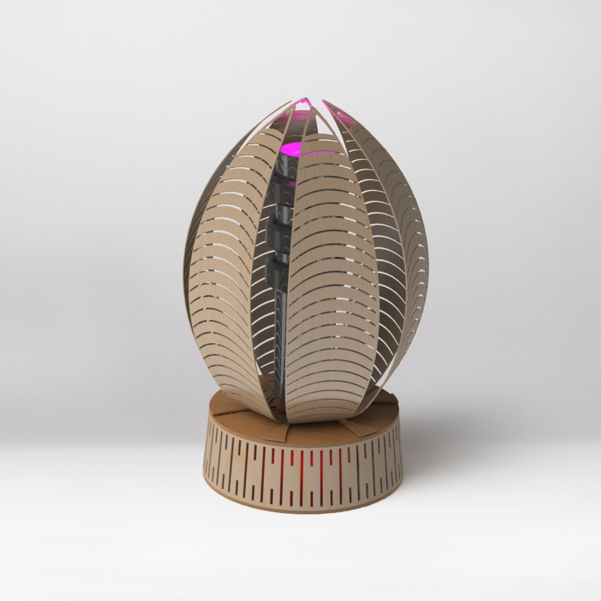
03DESIRE Award 2020
Soft Robotic Hand Exoskeleton
A medical-technology development project: a lightweight hand exoskeleton to help restore dexterity for stroke patients, who can lose up to 80% of their grip strength. It won Imperial's DESIRE award for the rigour of the engineering design process and its long-term feasibility.
The design paired soft actuation with myoelectric control and electrotactile feedback, targeting around 24N of added grip, with conductive-fabric hand sensors bench-tested on Arduino to prove the approach. Extensive research and care went into addressing stroke patients' needs, such as making it easy to put on one-handed and minimising the weight placed on their limbs.
MechatronicsCAD/CAMAcademic Research
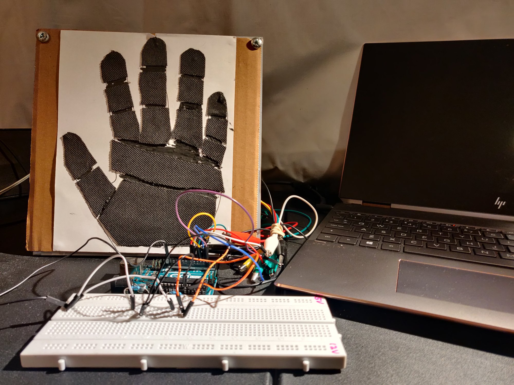
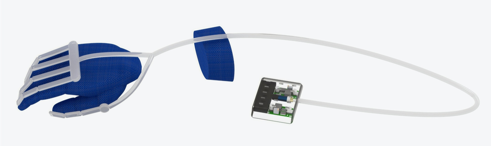
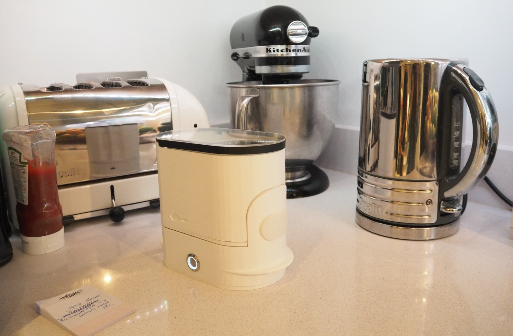
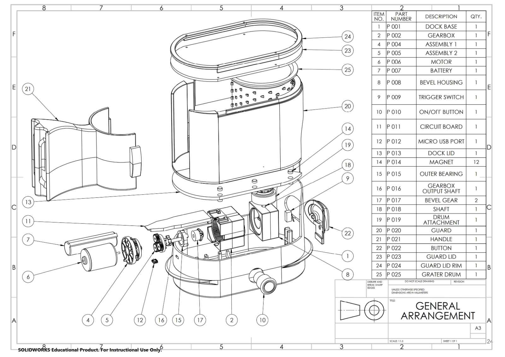
04Product design & DFM
Squeezy Box
Presented with an electric screwdriver, we had to tear it down and reincarnate it as an innovative design-for-manufacture appliance. The high-torque, low-RPM screwdriver was ideal for an electric grater. The existing motor and gear train were used to drive a rotary grater drum, fed by a separate plunger so that anyone can grate and slice safely, never near a blade.
The goal was twofold: make grating easier for everyone, and get kids excited to help in the kitchen and discover where their food comes from. Reverse-engineering, SolidWorks, 3D-printed iteration and user testing shaped it into its final form; a playful, dishwashable, carrot-shaped grater, driven by a detachable motor unit.
Industrial DesignCAD/CAMUser TestingVideo Production
05Systems & sustainability
Bube
Baby food, cubed. A circular-economy baby-food concept built on compostable cubes that strip out packaging and waste. The cubes put in work: they fit 20% more product per shipment than glass baby-food jars, all whilst having 10% less life-cycle energy. This project was an end-to-end piece of system and brand design, from the PHB-bioplastic supply loop made from agricultural by-products to stakeholder mapping and identity.
System DesignUser ResearchEnvironmental Analysis
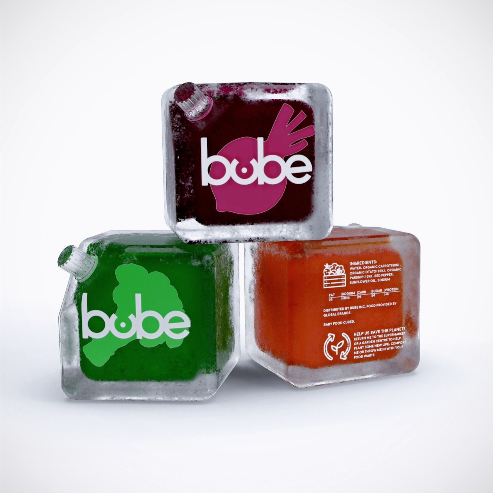
Further Work
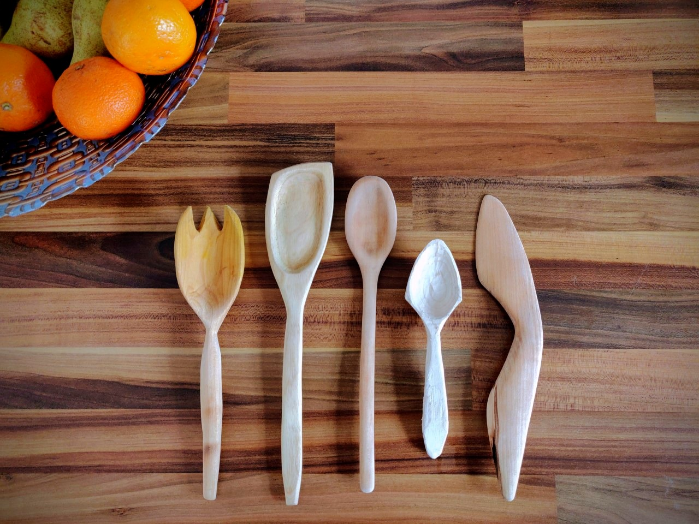
06Hand Craft
Wood Carving
A week of hand tools in a traditional Whitstable woodshop, axing and pole-lathing a log down into a set of spoons and servers. Watching people make something of value from a log was genuinely mesmerising.
HAND CARVING · TRADITIONAL WOODWORKING
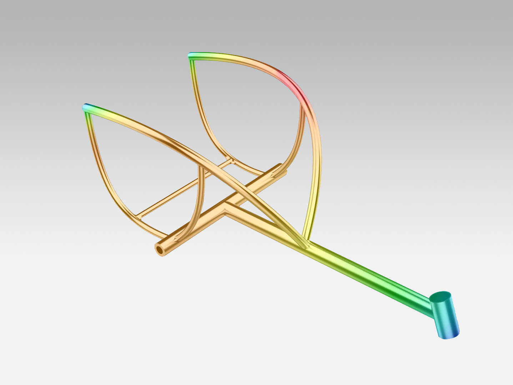
07Optimisation
Racing Frame Optimisation
A group project to strip mass from a racing-wheelchair frame without overstressing it, coupling SOLIDWORKS FEA with Python curve-fitting and MATLAB genetic algorithms. My first proper foray into algorithmic optimisation.
FEA · GENERATIVE DESIGN · PYTHON · MATLAB
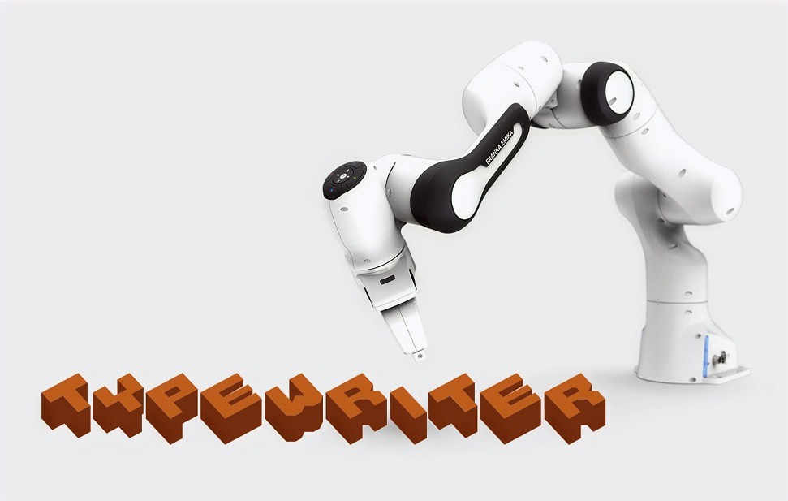
08Robotics
Robotic Typewriter
With a Franka Emika Panda arm and a pile of foam bricks to hand, my idea was a 'robotic typewriter' that spells any word you give it, pathing between letters with probabilistic-roadmap motion planning.
ROBOTICS · INTERACTION DESIGN · PYTHON
09Interaction Design
Imperial AI Art Project
What started as one White City sculpture challenge grew into a college-wide interactive art experience, after I got to collaborate with OpenAI on closed-beta DALL·E 2 access.
EXPERIENCE DESIGN · IMPLEMENTATION · REDTEAMING
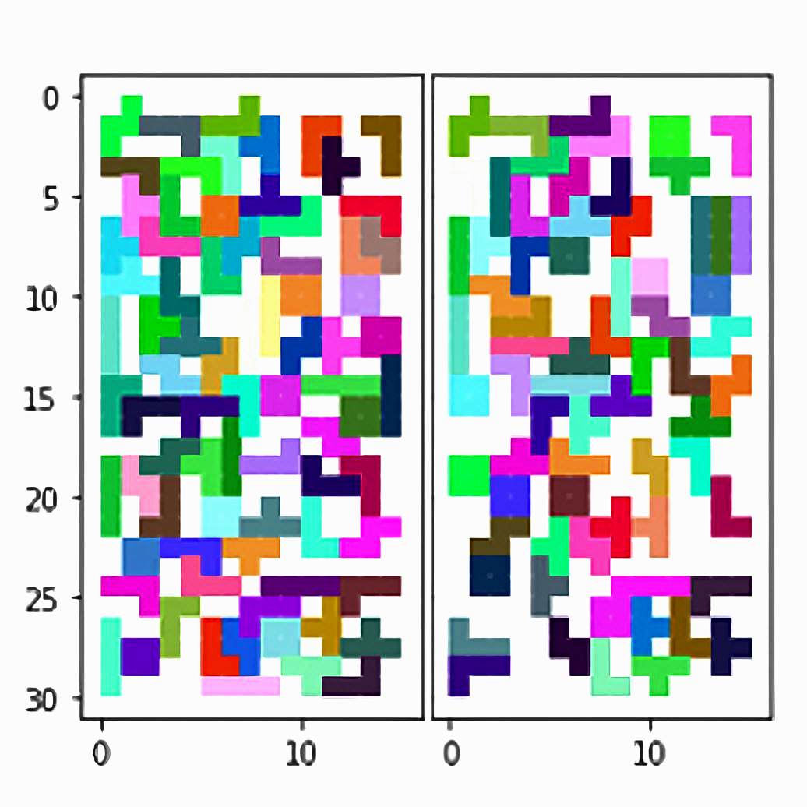
10Computer Science
Tetriling Algorithms
A packing algorithm I wrote to rebuild randomised grids from Tetris pieces, trickiest shapes first. It held above 87% accuracy on grids up to 1000×1000, in seconds.
PYTHON · ALGORITHM DESIGN · OPTIMISATION
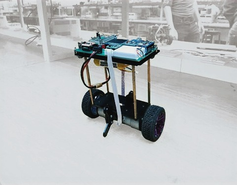
11Mechatronics
Dancing Segway
A self-balancing segway that detects a beat and grooves along to it (Kool & The Gang, specifically), on gyroscope and accelerometer control via a PyBoard.
Keen to see manufacture at industrial scale, I reached out to a major sub-contract steel facility and earned a spot working on their floor. I dug into the operational side to see what keeps it ticking, from client and material orders to accounting, work scheduling, production pipelines and toolpathing.
The hands-on work felt pleasantly familiar, and I was right at home, just at a scale well beyond my workshop bench: large-capacity CNC machining and flame cutting, coded welding, non-destructive examination and applying protective coatings on fabrications up to 35 tonnes.
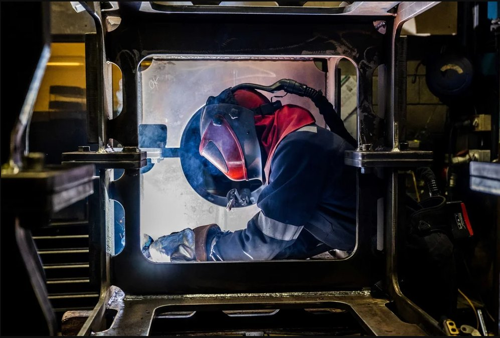
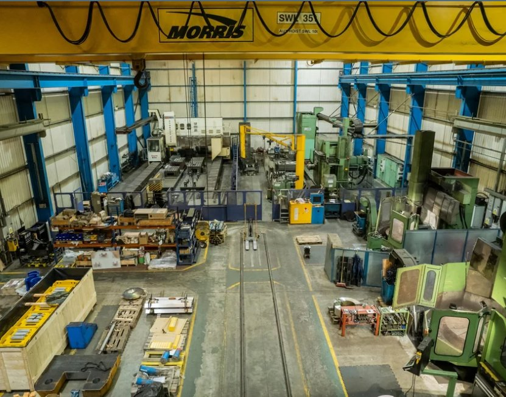
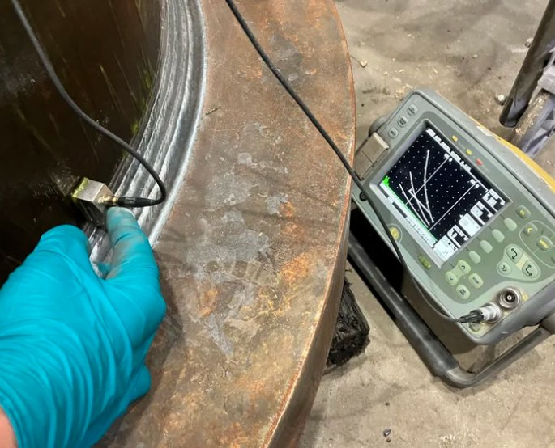
Experience
Hardware & Manufacture
2022 — NOW
Design Engineer / Independent R&D
Self-directed + Stephenson Engineering
Ongoing fabrication and materials R&D, including a proprietary process for CMYK printing on titanium, alongside freelance design-engineering and software commissions spanning CAD/CAM, process automation and bespoke builds. Includes an industrial placement at Stephenson Engineering and a Python financial-API project that cut project lead times by 35%.
2018 — 2020
Design Engineering Specialist & Technician
Key role
ICAH, Imperial College Advanced Hackspace
As the Hackspace's first student-staff member, I got its Europa CNC mill working from scratch, sorting out the PC connectivity and the CAD-to-CAM-to-machine workflow so members could take a design all the way to a finished part.
I built a 3D-router tool-pathing system that roughly doubled the workshop's capacity, wrote the safety and operating procedures, kept the machinery maintained, managed workshop inventory, and trained 70+ members on CAD/CAM. Alongside accelerating 30+ member projects, I ran my own R&D builds, including a motorised emergency door barricade with 68% more impact resistance and 42% faster deployment.
SUMMER 2019
Design Instructor
Imperial College Global Summer School
Co-tutored 40+ students aged 15–17 in Design Thinking, guiding teams of five from ideation through prototyping to a final pitch in a single week. The real task was translating technical and creative ideas into clear, hands-on direction under a tight deadline; the kind of communication that a collaborative workshop runs on. This role was immensely rewarding, especially given the level of student growth.
Software & Delivery
2022 — NOW
Founder & Principal Tutor
Independent tutoring practice
Built and ran my own tutoring business end to end, from client acquisition and scheduling to delivery and outcomes, alongside freelance design-engineering and software work. Two years of running a small operation, communicating complex ideas clearly, and being accountable for results.
2025
Full-Stack Engineer
Tech Returners
Developed and delivered an exhibition-curation Android app in Kotlin with a secure, documented backend API and an accessible UI (pagination, filtering, sorting), completing the MVP in four weeks. Built on Northcoders full-stack training: Java/Spring, data structures and TDD, rounding out the software side of my design-engineering work.
2021
Logistics Design Engineer
GAUS (volunteer)
Designed a modular inventory system for US food banks in three months, cutting food waste by ~10% with an onboarding-friendly mobile interface and food-safety compliance built in.
2017
Data Management Engineer
First Property Asset Management
Restructured the company database with a bespoke file structure and automated filing for 40+ property folders, cutting handover errors, and ran senior-stakeholder due-diligence research.
Education
2017 — 2022
MEng Design Engineering · 2:1
Imperial College London
Integrated Master's Degree, Fully Accredited
A four-year integrated master's spanning product design, R&D, user experience and CAD/CAM, with coursework across robotics & electronics, system design, optimisation, prototyping and project management. I delivered five commercially viable products, including the award-winning Retro Table Football, and co-developed the DESIRE-award-winning soft robotic exoskeleton for stroke patients.
National Young Designer of the Year, 2nd — The Design Museum 3DPRINTUK additive-manufacturing internship.
2024 — 2025
Full-Stack Java Software Development
Northcoders
Intensive full-stack software bootcamp
Core Java & OOP and full-stack development (Java/Spring Boot and Android), covering data structures & algorithms, databases and SQL/Hibernate, Git and test-driven development with JUnit and Mockito.
About
I love it when things work well.So I make them.
I'm an innovator who likes to build the capability as much as the part: standing up the machine, writing the manual nobody had, and teaching the next person to use it. I sweat the details others skip, because that's usually where an object is won or lost.
I'm equally at home wrangling jobs and machinery, writing production plans and safety docs, or precisely delivering parts on the workshop floor. Lately that's spanned a proprietary process for printing on titanium and a run of one-off freelance hardware and software commissions. I'm a relentless learner too, and actively tutor Oxbridge entrance exams and STEM. Away from the bench, I box, boulder, lift, and love cooking...